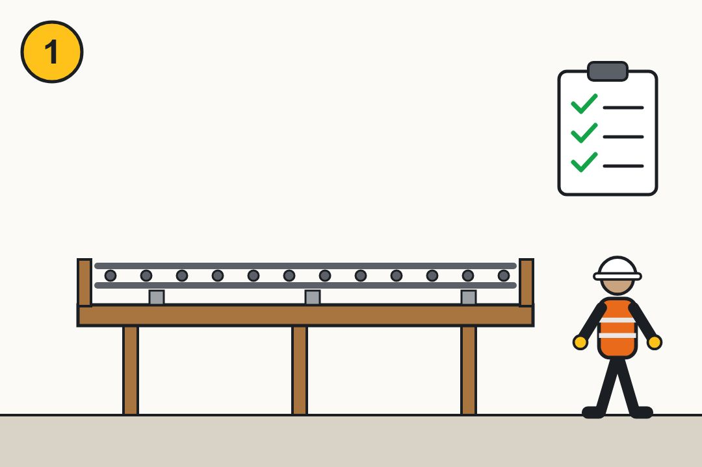
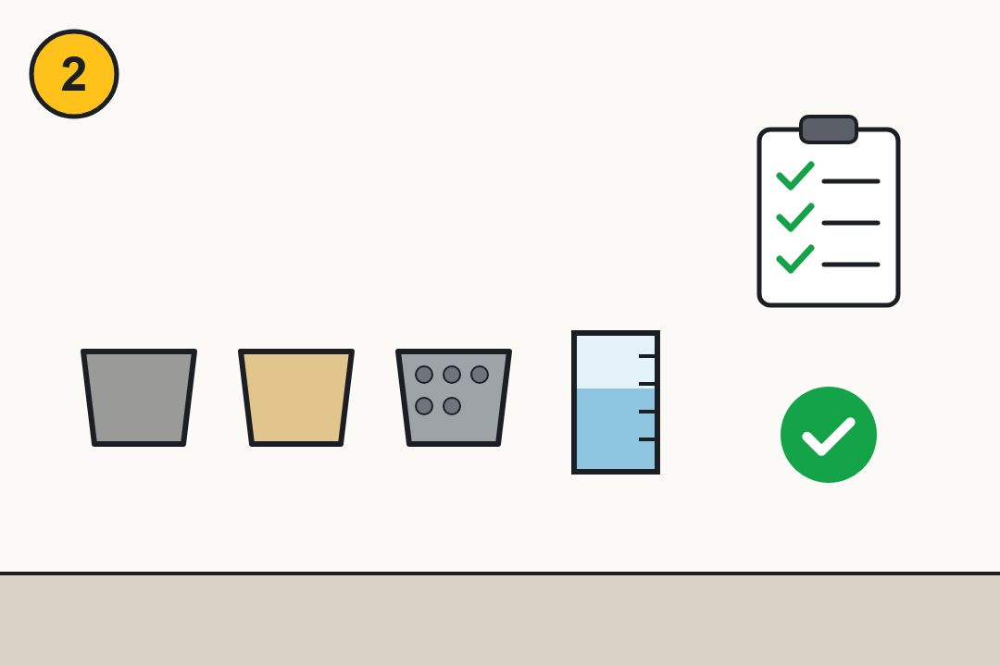
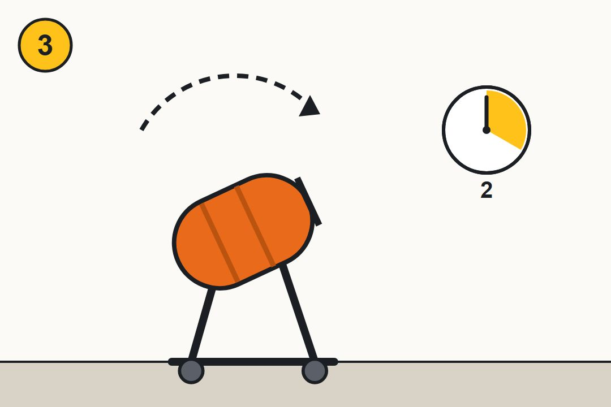
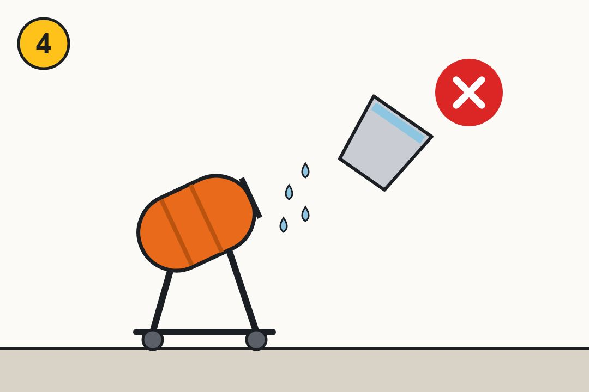
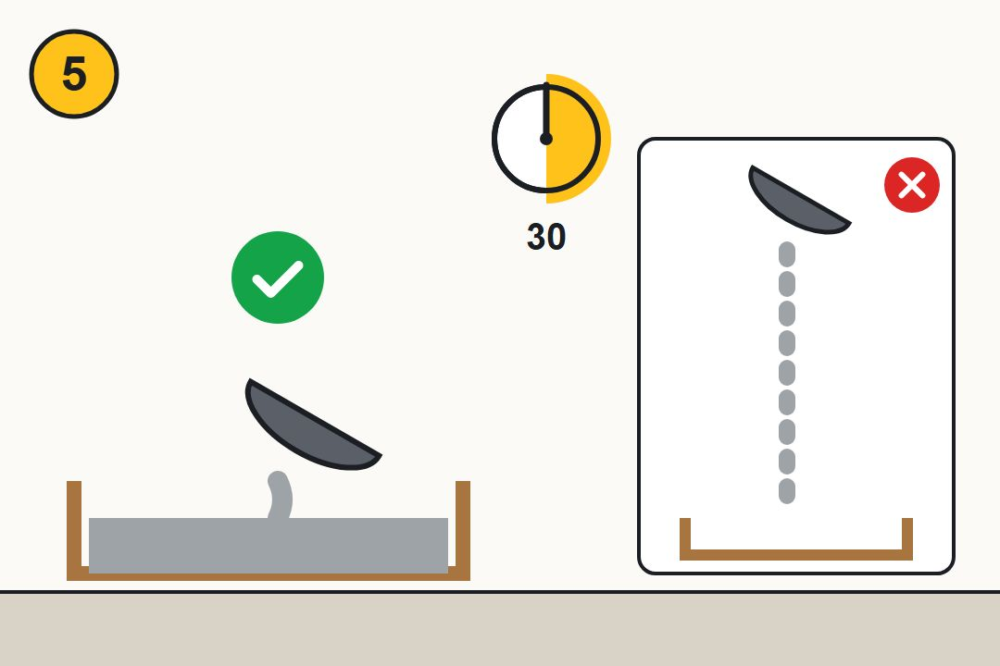
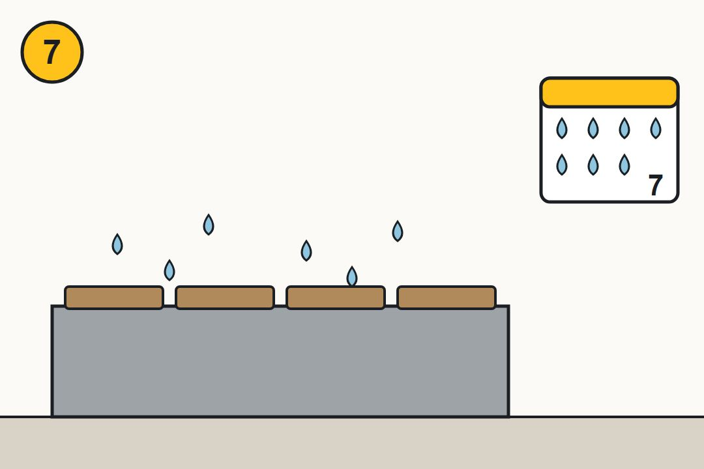

Content review · SS-CON-01 · Concrete Work – Basic Procedure
Draft for expert review. Text was drafted with an AI assistant and edited by the developer. Pictures are simple drawings without words (real site photos may replace them). Please mark anything unsafe, wrong or different from local practice. Workers will read this in Marathi, Hindi or English, with audio. Any change you make will be applied to all three languages.
| Field | Text |
|---|---|
| Description | How to mix, place and compact concrete so it becomes strong. Follow the engineer's mix and these steps. |
| Objective | Mix, place and compact concrete correctly and start curing on time. |
| Materials and tools | Cement · Sand · Aggregate (khadi) · Water · Measuring box · Concrete mixer · Needle vibrator or tamping rod · Head pans · Trowel and float · Curing water or wet gunny bags |
| Duration | 6 min |
Steps (one per screen)

1. Before you start, the supervisor checks the formwork and steel. The formwork must be strong, clean and without gaps.
OK
Change
Change

2. Measure cement, sand, aggregate and water with boxes, as the engineer says. Never mix by guess.
OK
Change
Change

3. Put aggregate, sand and cement in the mixer, then add the measured water slowly. Mix for about 2 minutes, until the colour is even.
OK
Change
Change

4. Never add extra water to make the concrete easy to work. Extra water makes the concrete weak.
OK
Change
Change

5. Carry and place the concrete quickly, within about 30 minutes of mixing. Do not drop it from a big height.
OK
Change
Change

6. Compact with the vibrator until air bubbles stop coming up. Do not vibrate too long in one place.
OK
Change
Change

7. Level the top surface. Start curing when the surface is hard, and keep it wet for at least 7 days.
OK
Change
Change
Safety and common mistakes
Safety precautions
- Wear gloves, boots, a helmet and eye protection. Wet cement burns skin.
- Never put a hand or tool into a running mixer.
- Keep the vibrator cable dry and away from water.
- Do not stand under a loaded bucket or near the edge of the slab.
- Wash cement off your skin with clean water at once.
Common mistakes
- Adding extra water
- Mixing by guess, not by measure
- Placing concrete late
- Dropping concrete from a height
- Poor compaction (honeycombs)
- Stopping curing early
Quiz (correct answer in green)
| # | Question and options | Explanation shown to worker | OK? |
|---|---|---|---|
| 1 | Why must you not add extra water to concrete? A It makes the concrete weak · B It makes the concrete dry faster · C It only changes the colour · D The mixer does not allow it | Extra water leaves tiny holes when it dries. The concrete becomes weak and can crack. | |
| 2 | Who checks the formwork and steel before concreting? A Any helper · B The supervisor or engineer · C Nobody, just start · D The material supplier | The supervisor or engineer checks that formwork and steel are strong and in the right place before concrete is poured. | |
| 3 | When should you stop vibrating at one place? A Always after 10 seconds · B When the vibrator gets hot · C When air bubbles stop coming up · D Never, keep vibrating | When bubbles stop, the air is out. Vibrating too long pushes the stones down and the water up. | |
| 4 | What happens if concrete is not compacted well? A It becomes stronger · B It sets faster · C Nothing happens · D It gets holes (honeycombs) and becomes weak | Air left inside makes holes. Honeycombs make the concrete weak and let water reach the steel. | |
| 5 | How long should new concrete be kept wet (curing)? A Only 1 day · B At least 7 days · C 1 hour · D It is not needed | Cement needs water to gain strength. Keep concrete wet for at least 7 days, or as the engineer says. |
Values to confirm
| Value or rule | OK / change to |
|---|---|
| Mix in the mixer for about 2 minutes | |
| Place within about 30 minutes of mixing | |
| Maximum free-fall height when placing (for "Do not drop it from a big height") | |
| Vibrate until air bubbles stop; do not over-vibrate | |
| Curing at least 7 days (does it change for the cement used on site?) | |
| Formwork and steel checked by supervisor/engineer before pouring |
Other comments
Sign-off
| Decision | Approved Approved with the changes above Not approved |
| Reviewer name | |
| Qualification / role | |
| Date and signature | |
| May we show "Reviewed by: name, qualification" in the app? | Yes No |